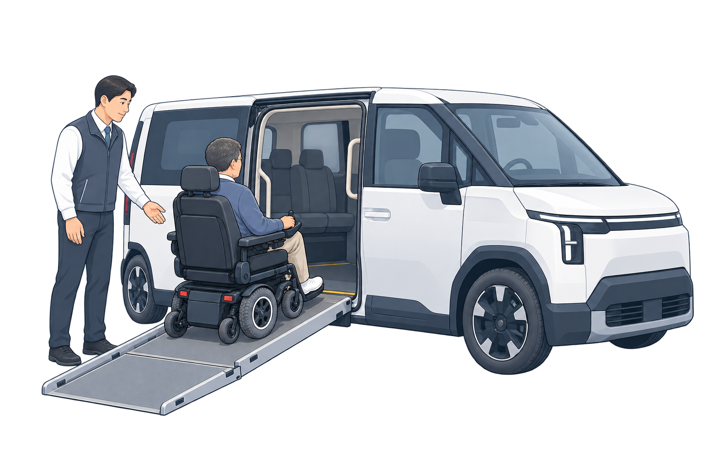

평소 사용하는 이동 보조기기를 알려주세요
미리 저장하면 차량을 부를 때 다시 설명하지 않아도 돼요.

휠체어에 앉은 채 탑승해요
옆문 경사로로 들어간 뒤 차량 안에서 휠체어를 고정해요.
미리 저장하면 차량을 부를 때 다시 설명하지 않아도 돼요.

휠체어에 앉은 채 탑승해요
옆문 경사로로 들어간 뒤 차량 안에서 휠체어를 고정해요.
선택 사항이에요. 미리 알려두면 차량을 부를 때 확인이 빨라져요.
지금 안 알려주셔도 호출할 수 있어요. "규격 미확인"으로 저장돼요.
필요한 내용을 적어 주세요. 접수할 때 함께 확인하고, 가능한 방법을 안내해 드려요.